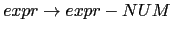
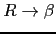
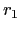

Sig: Reconocimiento de Lenguajes con Sup: Análisis Descendente mediante Parsing Ant: PegJS en los Browser Con:
[~/srcPLgrado/pegjs-coffee-plugin/examples(master)]$ pwd -P /Users/casiano/local/src/javascript/PLgrado/pegjs-coffee-plugin/examples
[~/srcPLgrado/pegjs-coffee-plugin/examples(master)]$ git remote -v dignifiedquire git@github.com:Dignifiedquire/pegjs-coffee-plugin.git (fetch) dignifiedquire git@github.com:Dignifiedquire/pegjs-coffee-plugin.git (push) origin git@github.com:crguezl/pegjs-coffee-plugin.git (fetch) origin git@github.com:crguezl/pegjs-coffee-plugin.git (push)
[~/srcPLgrado/pegjs-coffee-plugin/examples(master)]$ cat leftrec.jison
/*
Exercise: Find a PEG equivalent to the following left-recursive
grammar:
*/
%lex
%%
\s+ { /* skip whitespace */ }
y { return 'y';}
. { return 'x';}
/lex
%{
do_y = function(y) { console.log("A -> 'y' do_y("+y+")"); return y; }
do_x = function(a, x){ console.log("A -> A 'x' do_x("+a+", "+x+")"); return a+x; }
%}
%%
A : A 'x' { $$ = do_x($1, $2); }
| 'y' { $$ = do_y($1); }
;
[~/srcPLgrado/pegjs-coffee-plugin/examples(master)]$ jison leftrec.jison [~/srcPLgrado/pegjs-coffee-plugin/examples(master)]$ ls -ltr leftrec.j* -rw-r--r-- 1 casiano staff 441 18 mar 20:22 leftrec.jison -rw-r--r-- 1 casiano staff 20464 18 mar 20:34 leftrec.js
[~/srcPLgrado/pegjs-coffee-plugin/examples(master)]$ cat main_leftrec.js
var parser = require('./leftrec');
input = "y x x x";
var r = parser.parse(input);
[~/srcPLgrado/pegjs-coffee-plugin/examples(master)]$ node main_leftrec.js A -> 'y' do_y(y) A -> A 'x' do_x(y, x) A -> A 'x' do_x(yx, x) A -> A 'x' do_x(yxx, x)
Es posible modificar la gramática para eliminar la recursión por la izquierda. En este apartado nos limitaremos al caso de recursión por la izquierda directa. La generalización al caso de recursión por la izquierda no-directa se reduce a la iteración de la solución propuesta para el caso directo.
Consideremos una variable  con dos producciones:
con dos producciones:
donde
 no comienzan por
no comienzan por  .
Estas dos producciones pueden ser sustituidas por:
.
Estas dos producciones pueden ser sustituidas por:
eliminando así la recursión por la izquierda.
[~/pegjs-coffee-remove-left(master)]$ cat -n remove_left_recursive.pegjs
1 /*
2
3 Exercise: Find a PEG equivalent to the following left-recursive
4 grammar:
5
6 A : A 'x' { $$ = do_x($1, $2); } | 'y' { $$ = do_y($1); }
7
8 */
9
10 {
11 @do_y = (y) -> console.log("do_y(#{y})"); y
12 @do_x = (a, x)-> console.log("do_x(#{a}, #{x})"); a+x
13 }
14
15 A = y:'y' xs:('x'*)
16 {
17 a = @do_y(y)
18 for x in xs
19 a = @do_x(a, x)
20 a
21 }
[~/pegjs-coffee-remove-left(master)]$ pegjs --plugin pegjs-coffee-plugin remove_left_recursive.pegjs [~/pegjs-coffee-remove-left(master)]$ ls -ltr | tail -1 -rw-rw-r-- 1 casiano staff 8919 3 jun 10:42 remove_left_recursive.js
[~/pegjs-coffee-remove-left(master)]$ cat use_remove_left.coffee
PEG = require("./remove_left_recursive.js")
inputs = [
"yxx"
"y"
"yxxx"
]
for input in inputs
console.log("input = #{input}")
r = PEG.parse input
console.log("result = #{r}\n")
[~/pegjs-coffee-remove-left(master)]$ coffee use_remove_left.coffee input = yxx do_y(y) do_x(y, x) do_x(yx, x) result = yxx input = y do_y(y) result = y input = yxxx do_y(y) do_x(y, x) do_x(yx, x) do_x(yxx, x) result = yxxx
[~/Dropbox/src/javascript/PLgrado/pegjs/examples(master)]$ cat simple.pegjs
/* From the Wikipedia
Value ← [0-9]+ / '(' Expr ')'
Product ← Value (('*' / '/') Value)*
Sum ← Product (('+' / '-') Product)*
Expr ← Sum
*/
{
function reduce(left, right) {
var sum = left;
// console.log("sum = "+sum);
for(var i = 0; i < right.length;i++) {
var t = right[i];
var op = t[0];
var num = t[1];
switch(op) {
case '+' : sum += num; break;
case '-' : sum -= num; break;
case '*' : sum *= num; break;
case '/' : sum /= num; break;
default : console.log("Error! "+op);
}
// console.log("sum = "+sum);
}
return sum;
}
}
sum = left:product right:($[+-] product)* { return reduce(left, right); }
product = left:value right:($[*/] value)* { return reduce(left, right); }
value = number:$[0-9]+ { return parseInt(number,10); }
/ '(' sum:sum ')' { return sum; }
Es posible especificar mediante llaves un código que este disponible dentro de las acciones semánticas.
Ejecución:
[~/pegjs/examples(master)]$ cat use_simple.js
var PEG = require("./simple.js");
var r = PEG.parse("2-3-4");
console.log(r);
[~/pegjs/examples(master)]$ node use_simple.js
-5
Veamos otra ejecución:
[~/Dropbox/src/javascript/PLgrado/pegjs/examples(master)]$ cat use_simple.js
var PEG = require("./simple.js");
var r = PEG.parse("2+3*(2+1)-10/2");
console.log(r);
[~/Dropbox/src/javascript/PLgrado/pegjs/examples(master)]$ ../bin/pegjs simple.pegjs
[~/Dropbox/src/javascript/PLgrado/pegjs/examples(master)]$ node use_simple.js
6
pegjs (aunque
obviamente es mucho mejor
usar la ilustrada anteriormente).
Es posible modificar la gramática para eliminar la recursión por la izquierda. En este apartado nos limitaremos al caso de recursión por la izquierda directa. La generalización al caso de recursión por la izquierda no-directa se reduce a la iteración de la solución propuesta para el caso directo.
Consideremos una variable  con dos producciones:
con dos producciones:
donde
 no comienzan por
no comienzan por  .
Estas dos producciones pueden ser sustituidas por:
.
Estas dos producciones pueden ser sustituidas por:
|
|
eliminando así la recursión por la izquierda.
Las producciones recursivas por la derecha dan lugar a árboles que se hunden hacia la derecha. Es mas difícil traducir desde esta clase de árboles operadores como el menos, que son asociativos a izquierdas.
|  |
|
|
|
|
{ alpha_action } |
|
|
{ beta_action } |
|
|
{ gamma_action } |
para una sentencia como
 la secuencia de
acciones será:
la secuencia de
acciones será:
gamma_action beta_action alpha_action
¿Cómo construir un esquema de traducción para la gramática resultante de eliminar la recursión por la izquierda que ejecute las acciones asociadas en el mismo orden?. Supongamos para simplificar, que las acciones no dependen de atributos ni computan atributos, sino que actúan sobre variables globales. En tal caso, la siguiente ubicación de las acciones da lugar a que se ejecuten en el mismo orden:
{ gamma_action } |
 { beta_action } |
{ alpha_action } |
|
|
Si hay atributos en juego, la estrategia para construir un esquema de traducción equivalente para la gramática resultante de eliminar la recursividad por la izquierda se complica. Consideremos de nuevo el esquema de traducción de infijo a postfijo de expresiones aritméticas de restas:
|
|
{ $expr{T} = $expr[1]{T}+" "+$NUM{VAL}+" - "} |
|
|
{ $expr{T} = $NUM{VAL} } |
En este caso introducimos un atributo H para los nodos de la clase
 el cuál
acumula la traducción a postfijo hasta el momento. Observe como
este atributo se computa en un nodo
el cuál
acumula la traducción a postfijo hasta el momento. Observe como
este atributo se computa en un nodo  a partir del
correspondiente atributo del el padre y/o de los hermanos del nodo:
a partir del
correspondiente atributo del el padre y/o de los hermanos del nodo:
{ $r{H} = $NUM{VAL} } { $expr{T} = $r{T} }
{ $r_1{H} = $r{H}+" "+$NUM{VAL}." - " }  { $r{T} = $r_1{T} }
{ $r{T} = $r{H} }
El atributo H es un ejemplo de atributo heredado.
PegJS no permite acciones intermedias aunque si predicados semánticos. Tampoco se puede acceder al atributo de la parte izquierda. Por eso, a la hora de implantar la solución anterior debemos introducir predicados semánticos.
Además nos obliga a usar variables visibles por todas las reglas semánticas para emular el acceso a los atributos de la parte izquierda de una regla de producción.
El siguiente ejemplo ilustra como eliminar la recursión por la izquierda respetando la asociatividad de la operación de diferencia:
[~/srcPLgrado/pegjs/examples(master)]$ cat inherited2.pegjs
{
var h = 0, number = 0;
}
e = NUMBER &{ h = number; return true; } r { return h; }
r = '-' NUMBER &{ h -= number; return true; } r { return h; } / /* empty */
NUMBER = _ digits:$[0-9]+ _ { number = parseInt(digits, 10); return number; }
_ = $[ \t\n\r]*
Aquí h - aún cuando se trata de una variable compartida -
es usado como si fuera un atributo de los símbolos del PEG. Un tal atributo se
denomina heredado.
Este es el código para usar el PEG anterior:
[~/srcPLgrado/pegjs/examples(master)]$ cat use_inherited2.js
var PEG = require("./inherited2.js");
var input = process.argv[2] || "5-1-2";
var r = PEG.parse(input);
console.log(r);
Al ejecutarlo obtenemos:
[~/srcPLgrado/pegjs/examples(master)]$ pegjs inherited2.pegjs [~/srcPLgrado/pegjs/examples(master)]$ node use_inherited2.js 4-3-1 0 [~/srcPLgrado/pegjs/examples(master)]$ node use_inherited2.js 7-1-2 4
[~/srcPLgrado/pegjs/examples(master)]$ cat simple2.pegjs
{
var sum = 0;
var initsum = function(first) {
sum = first;
return true;
};
var add = function(op, p) {
switch(op) {
case '+':
sum += p;
break;
case '-':
sum -= p;
break;
default:
error('"+" or "-" expected');
}
return true;
};
}
sum = first:value &{ return initsum(first); } (op:[+-] product:value & { return add(op, product); })* { return sum; }
value = number:$[0-9]+ { return parseInt(number,10); }
/ '(' sum:sum ')' { return sum; }
El primer predicado first:value &{ return initsum(first); } inicializa la suma.
A continuación y aprovechando el cierre * se ejecuta en bucle el segundo predicado
(op:[+-] product:value & { return add(op, product); }) que va acumulando el resultado.
La acción semántica final se limita a retornar el resultado acumulado.
[~/srcPLgrado/pegjs/examples(master)]$ cat use_simple2.js
var PEG = require("./simple2.js");
var input = process.argv[2] || "5-1-2";
var r = PEG.parse(input);
console.log(r);
[~/srcPLgrado/pegjs/examples(master)]$ pegjs simple2.pegjs [~/srcPLgrado/pegjs/examples(master)]$ node use_simple2.js 3-1-5 -3
La variable sum es excesivamente visible. Podemos encapsularla un poco mas:
[~/srcPLgrado/pegjs/examples(master)]$ cat simple3.pegjs
{
var sum = (function() {
var sum = 0;
var get = function() { return sum; };
var set = function(first) {
sum = first;
return true;
};
var add = function(op, p) {
switch(op) {
case '+':
sum += p;
break;
case '-':
sum -= p;
break;
default:
error('"+" or "-" expected');
}
return true;
};
return {s: set, a: add, g: get };
})();
}
sum = first:value &{ return sum.s(first); } (op:[+-] product:value & { return sum.a(op, product); })* { return sum.g(); }
value = number:$[0-9]+ { return parseInt(number,10); }
/ '(' sum:sum ')' { return sum; }
[~/srcPLgrado/pegjs/examples(master)]$ cat use_simple3.js
var PEG = require("./simple3.js");
var input = process.argv[2] || "5-1-2";
var r = PEG.parse(input);
console.log(r);
[~/srcPLgrado/pegjs/examples(master)]$ pegjs simple3.pegjs [~/srcPLgrado/pegjs/examples(master)]$ node use_simple3.js 4-1-1 2 [~/srcPLgrado/pegjs/examples(master)]$ node use_simple3.js 4-1-4 -1